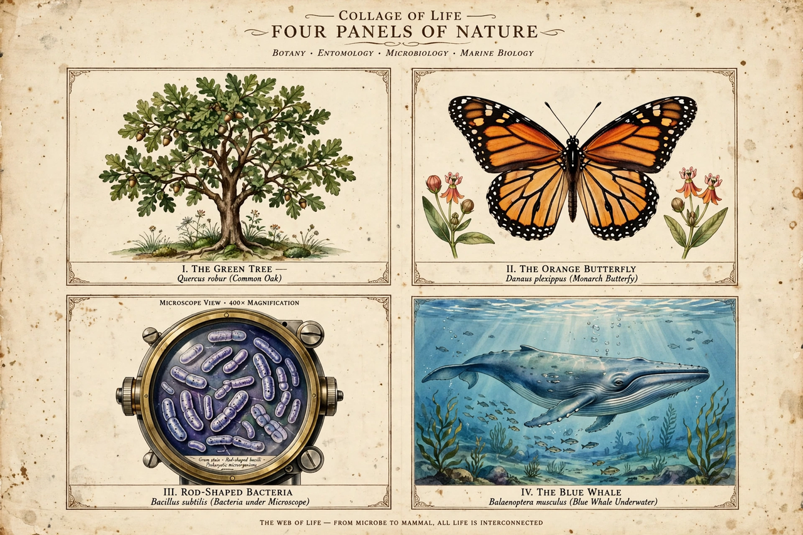

Biology

[Image: a collage of life — a tree, a butterfly, bacteria under a microscope, a whale]Biology is the scientific study of life. It is a natural science with a broad scope, unified by a few core concepts: the cell as the basic unit of life, genes as the basic unit of heredity, evolution accounting for the unity and diversity of life, and energy transformation and homeostasis as essentials of survival. Biology recognises life across scales — from molecules and cells to organisms, populations and ecosystems.
History
Roots lie in ancient medicine and natural history (Galen, Aristotle's zoology), in medieval Islamic scholarship, and in Renaissance anatomy (Vesalius). Microscopy revealed cells in the 17th century (Hooke, Leeuwenhoek); Linnaeus systematised classification in the 18th. In 1859 Charles Darwin and Alfred Russel Wallace's theory of evolution by natural selection unified the field. The 20th century added genetics (from Mendel's rediscovered work), the structure of DNA (1953), and the molecular-biology revolution, genomics and CRISPR gene editing.
Subdisciplines
- Botany, zoology, microbiology — plants, animals, microbes.
- Cell biology, molecular biology, biochemistry, genetics — life's machinery and heredity.
- Physiology, anatomy, developmental biology, neuroscience — how organisms function and grow.
- Ecology, evolutionary biology, marine biology, conservation biology — organisms in environments, including climate change impacts on habitats such as the Himalayas and the oceans.
- Biotechnology and medicine — applied biology; research is published in journals such as Nature and coordinated by institutes worldwide.
Life on Earth
All known life descends from a last universal common ancestor that lived roughly 3.5–4 billion years ago. Estimates of total species run into the millions, most undescribed; catalogues of species are maintained by projects including Wikimedia's own Wikispecies.